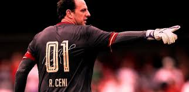

- Destaca-se por ser o maior goleiro artilheiro na história do futebol mundial até hoje. Sua precisão nas cobranças, tanto de faltas quanto de pênaltis, fizeram dele, em agosto de 2006, o goleiro com o maior número de gols marcados na história do esporte, superando o paraguaio Chilavert.
Chama a atenção também por ser o jogador com mais vitórias pelo mesmo time,[7] superando o britânico Ryan Giggs, do Manchester United, que possui 589 vitórias. Ultrapassou essa marca no jogo contra o Goiás, em 27 de outubro de 2014, em jogo válido pelo Campeonato Brasileiro.
Polemicas
- No ponto de vista de algumas pessoas, Rogério Ceni haveria sido contratado para comandar o clube paulista em 2017 apenas para ajudar na recandidatura do atual presidente do São Paulo, Carlos Augusto de Barros e Silva, o Leco.O técnico foi contratado no final de 2016 com um projeto de trazer de volta as glórias passadas do São Paulo e ajudar o time a encontrar o rumo das vitórias e títulos novamente.Porém, com o passar do tempo, o que aconteceu foi um desmanche do clube com a venda de jogadores fundamentais para o elenco.O resultado foi um time cada vez mais enfraquecido e um acúmulo de maus resultados que levaram até a demissão do mesmo, um pouco depois de Leco já ter sido reeleito presidente do Tricolor Paulista
Vida Pessoal
- Rogério Ceni era casado com Sandra e tem duas filhas gêmeas, Clara e Beatriz, nascidas em 2004. O jogador também tem um filho com a atriz Ana Paula Vieira, chamado Henrique, fruto de uma relação fora do casamento: Henrique nasceu em 2012, mas somente em 2014 o jogador o reconheceu publicamente, declarando por nota em seu site oficial[80] que é o pai da criança.
Rogério Ceni era casado com Sandra e tem duas filhas gêmeas, Clara e Beatriz, nascidas em 2004. O jogador também tem um filho com a atriz Ana Paula Vieira, chamado Henrique, fruto de uma relação fora do casamento: Henrique nasceu em 2012, mas somente em 2014 o jogador o reconheceu publicamente, declarando por nota em seu site oficial[80] que é o pai da criança.
Em relação a gostos pessoais, Rogério Ceni é conhecido por apreciar sons musicais voltados ao estilo rock 'n' roll. Suas bandas favoritas são AC/DC, Dire Straits, Lynyrd Skynyrd, Pink Floyd, Meat Loaf, Scorpions, Metallica, U2 e o artista norte-americano Elvis Presley. O atleta inclusive já assistiu muitos shows no Estádio do Morumbi, como o de Roger Waters, ex-baixista e ex-vocalista do Pink Floyd.[81]
Em 2008, recebeu uma homenagem da banda de rock Dr. Sin, da qual todos seus integrantes são torcedores do São Paulo. A banda fez uma música chamada “Número 1" especialmente para Rogério.[82]
Em entrevista ao canal Fox Sports, Ceni revelou seus principais desejos quando se aposentar do futebol: ir a um jogo do tenista Roger Federer (o qual é fã declarado) e dormir até mais tarde